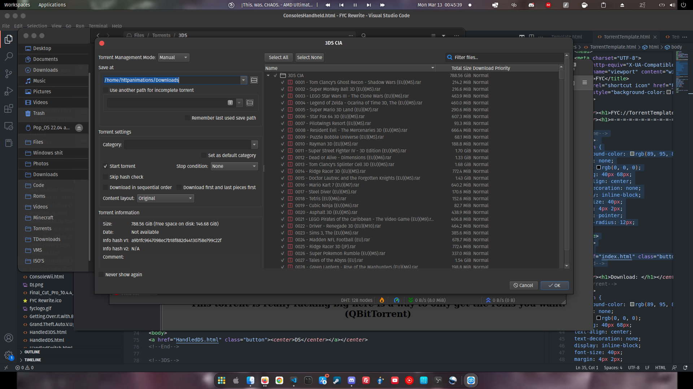
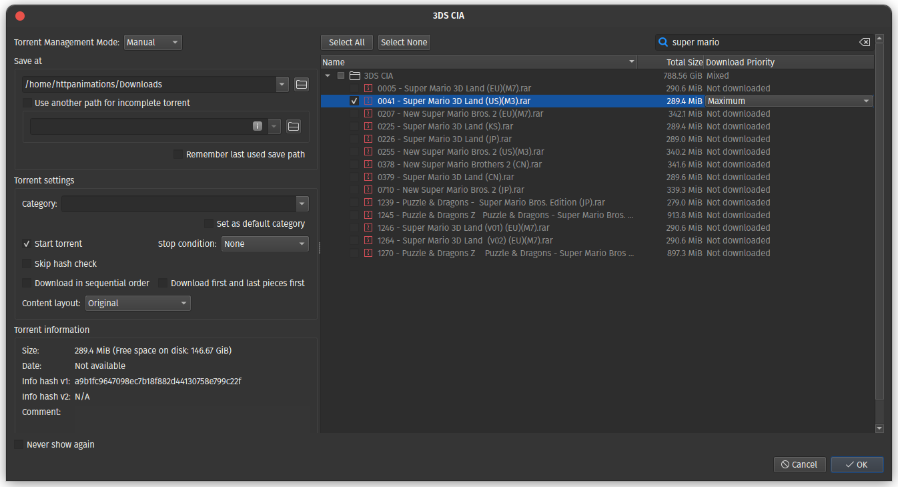

FYC://Roms - SNES Roms Complete Collection
=-=-=-=-=-=-=-=-=-=-=-=-=-=-=-=-=-=-=

Home
Download/Stream:
Magnet
Torrent
Play now (Stream)
Descption:
Super Nintendo Entertainment System [SNES] Roms Complete Collection (2.8gb)
Uploaded by Bladez1992
-----------------------------------------------------------------------------------
Torrent Info
This is a complete SNES rom set. Homebrew, hacks, translations, PAL to NTSC conversions, and unreleased games are all included. I sorted everything as well as I could, but there is a lot of unsorted stuff also. A lot of this came from coolroms, doperoms, emuparadise but some was from other sources as well.
-----------------------------------------------------------------------------------
This torrent has some notes:
This torrent is really fucking big here is a way to only get the roms you want. (QBitTorrent)

Click the button next to the folder and this will deslect everything inside

Now select the roms you want to download and this will download only them